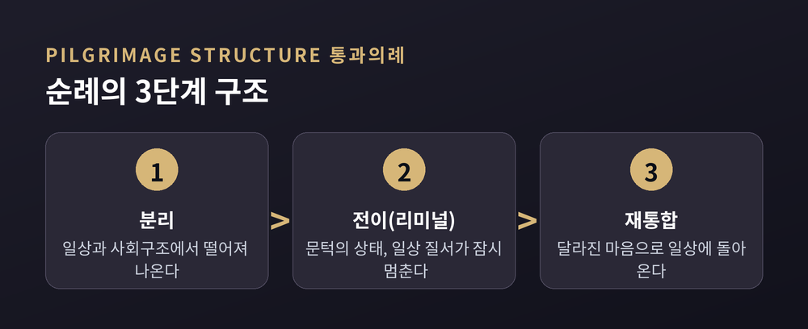
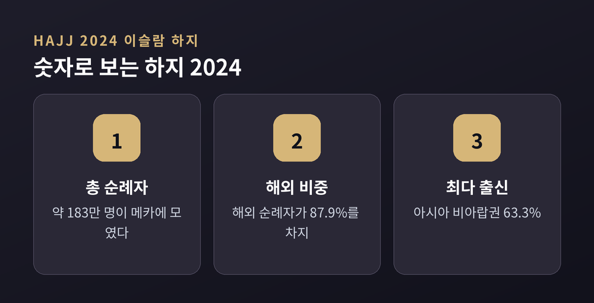
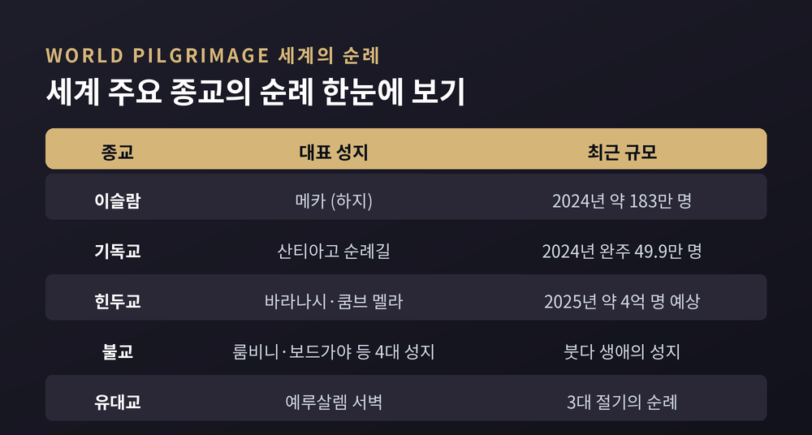
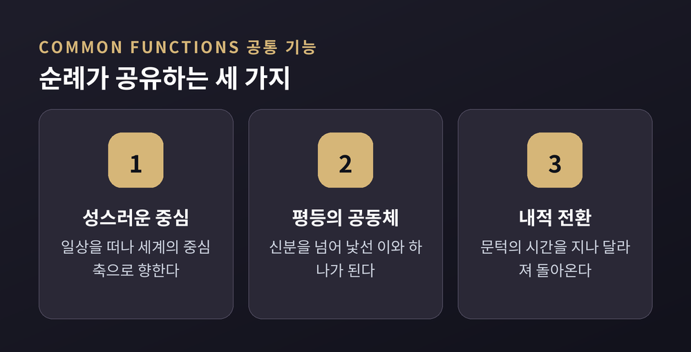

세계 종교의 순례 전통 — 메카·산티아고·바라나시로 떠나는 이유

이번 글에서는 세계 종교의 순례 전통을 종교학의 눈으로 정리해 보겠습니다.
먼저 답부터 말씀드립니다. 순례는 특정 종교의 전유물이 아닙니다. 이슬람, 기독교, 힌두교, 불교, 유대교가 저마다 다른 성지를 향하지만, 그 밑바탕에는 놀랍도록 닮은 구조가 흐릅니다. 일상을 떠나 성스러운 중심으로 향하고, 낯선 이들과 잠시 하나가 되었다가, 달라진 마음으로 돌아오는 것입니다.
특정 신앙을 옹호하거나 평가하려는 글이 아닙니다. 각 전통을 나란히 두고, 사람들이 왜 길을 떠나는지를 함께 살펴보려 합니다.
순례란 무엇인가 — 떠남과 돌아옴의 구조
종교학은 순례를 교리가 아니라 '구조와 기능'으로 봅니다.
종교사학자 미르체아 엘리아데는 성지를 '세계의 중심축(axis mundi)'이라 불렀습니다. 성스러운 장소가 세속적 일상 속으로 분출하고, 그 지점에서 평범한 공간이 우주의 축소판으로 바뀐다는 것입니다. 순례자는 그 중심을 향해 걷습니다.
인류학자 아르놀드 반 헤네프는 여기에 다른 틀을 겹칩니다. 통과의례입니다. 순례는 '분리 → 전이 → 재통합'의 세 단계를 밟습니다. 익숙한 자리에서 떨어져 나오고, 어중간한 문턱을 지나고, 변화된 상태로 되돌아옵니다.
예전엔 순례를 그저 '멀리 있는 성소를 찾는 여행'으로 여겼습니다. 지금은 하나의 의례, 곧 사람을 바꾸는 통과의 과정으로 읽습니다.

빅터 터너 — 문턱의 시간과 평등의 공동체
이 구조를 순례에 본격적으로 적용한 학자가 빅터 터너입니다.
영국 인류학자였던 그는 1969년 저작에서 두 개념을 제시했습니다. 하나는 '리미널리티(전이성)'입니다. 상징적 죽음과 재생 사이에 놓인, 일상 질서가 잠시 멈추는 문턱의 상태를 뜻합니다.
다른 하나는 '코뮤니타스'입니다. 신분과 지위의 차이가 사라진 자리에서 사람들이 평등하게 맺는 유대를 말합니다. 왕도 농부도, 부자도 가난한 이도 같은 옷을 입고 같은 길을 걷는 순간이 여기에 해당합니다.
터너는 순례의 목적을 두 가지로 요약했습니다. 성지에서 성스러움과 마주하는 체험, 그리고 낯선 이들과 하나가 되는 공동체 경험입니다. 인간은 삶의 변화를 소화하기 위해, 사회적 의무에서 잠시 떨어져 나오는 시간과 거리가 필요하다는 것입니다.
다만 이 이론이 전부는 아닙니다. 모든 순례가 평등과 조화만 낳지는 않습니다. 그 안에는 경쟁도, 긴장도, 차이도 함께 있습니다. 터너의 틀은 강력한 고전이되, 하나의 렌즈로 이해하는 편이 정확합니다.
이슬람의 하지 — 매년 180만 명이 향하는 메카
가장 규모가 큰 순례는 이슬람의 하지입니다.
하지는 이슬람의 다섯 기둥 가운데 하나입니다. 신앙고백, 예배, 자선, 단식과 나란히 놓이며, 여건이 되는 무슬림이라면 일생에 최소 한 번 수행할 의무로 여겨집니다.
시기는 이슬람 음력 12월에 고정돼 있습니다. 핵심 의례는 세 가지입니다. 카바를 반시계 방향으로 일곱 바퀴 도는 '타와프', 사파와 마르와 사이를 오가는 '사이', 그리고 아라파트 평원에 서서 기도하고 용서를 구하는 '우쿠프'입니다. 이 가운데 아라파트의 하루가 하지의 절정으로 꼽힙니다.
규모는 압도적입니다. 사우디 통계청 집계로 2024년 하지에는 총 1,833,164명이 모였습니다. 이 중 해외 순례자가 87.9퍼센트인 약 161만 명이었고, 절대다수가 항공편으로 입국했습니다. 출신지는 아시아 비아랍권이 63.3퍼센트로 가장 많았습니다.
빛나는 장면만 있는 것은 아닙니다. 2024년에는 극심한 폭염으로 1,300명 넘는 사망자가 나왔습니다. 대규모 군중이 한자리에 모이는 순례의 현실적 위험을 보여주는 대목입니다.

기독교의 산티아고 순례길 — 걸어서 닿는 사도의 무덤
유럽에는 천 년을 이어온 도보 순례가 있습니다. 카미노 데 산티아고입니다.
목적지는 스페인 갈리시아의 산티아고 데 콤포스텔라입니다. 예수의 열두 제자 중 하나인 사도 야고보의 무덤이 있다고 전해지는 곳입니다. 전승에 따르면 순교한 야고보의 시신을 제자들이 스페인으로 옮겨 묻었고, 9세기 초 한 은수자가 들판의 빛을 따라 그 무덤을 발견했다고 합니다.
여기서 종교학의 태도가 중요합니다. 다수 학자는 스페인의 성 야고보 숭배가 9세기 이전으로 거슬러 올라가지 않는다고 봅니다. 유해가 실제 사도의 것일 가능성은 낮다는 것입니다. 신앙의 전승과 역사적 검증은 구분해 다루는 편이 정직합니다.
그럼에도 길을 걷는 사람은 오히려 늘고 있습니다. 2024년 완주 증명서를 받은 순례자는 499,239명으로 역대 최다였습니다. 처음으로 외국인이 스페인인보다 많아졌고, 미국·이탈리아·독일 순으로 뒤를 이었습니다. 증명서를 신청하는 사람이 완주자의 3분의 1가량이라, 실제로 길에 오른 사람은 150만 명을 넘는 것으로 추정됩니다.
순례자는 여권에 경유지 도장을 모읍니다. 그 도장이 곧 길을 걸은 증거이자, 문턱의 시간을 지나온 기록이 됩니다.

힌두교의 바라나시와 쿰브 멜라 — 강물에 담그는 해탈
가장 많은 인원이 모이는 순례는 힌두교에 있습니다.
힌두교에서 갠지스강은 성스러운 강입니다. 강물에 몸을 담그는 '성스러운 목욕'은 영적 정화와 '모크샤', 곧 해탈로 이어진다고 믿어집니다. 갠지스 강가의 바라나시가 그 대표적 성지입니다.
절정은 쿰브 멜라입니다. 열두 해마다 갠지스·야무나·전설의 사라스와티 세 강이 만나는 프라야그라지에서 열리는 '마하 쿰브 멜라'는 규모가 특히 큽니다. 2025년 행사에는 약 4억 명이 다녀갈 것으로 예상됐습니다. 화장실 15만 개와 조명 기둥 6만 8천 개가 동원됐다는 수치가 그 규모를 짐작하게 합니다.
새벽 첫 입수는 재를 바른 고행자들이 이끄는 경우가 많습니다. 이들 중 다수는 몇 주를 걸어 이곳에 닿습니다. 신분과 배경이 달라도 같은 강물에 함께 몸을 담근다는 점에서, 앞서 본 코뮤니타스가 떠오르는 장면입니다.
여기에도 그늘은 있습니다. 2025년에는 군중 압사로 최소 30명이 숨졌습니다. 한편으로는 수중 드론과 인공지능 관제가 안전 관리에 투입됐습니다. 오래된 성스러움과 첨단 기술이 한자리에 공존하는 셈입니다.
불교와 유대교 — 붓다의 발자취, 예루살렘으로의 오름
불교의 순례는 붓다의 생애를 따라 걷습니다.
4대 성지는 그 삶의 결정적 순간과 이어집니다. 붓다가 태어난 룸비니, 깨달음을 얻은 보드가야, 첫 설법으로 '법의 수레바퀴'를 굴린 사르나트, 완전한 열반에 든 쿠시나가르입니다. 순례자는 이 길을 걸으며 마음챙김과 자비의 다짐을 새롭게 합니다.
유대교의 순례는 '올라감'이라는 말에 담겨 있습니다. 히브리어로 '알리야 라레겔', 곧 걸어서 예루살렘 성전산으로 오르는 일입니다. 유월절·칠칠절·초막절 세 절기마다 성전으로 향하는 것이 오랜 규정이었고, 각 절기에 수십만 명이 몰렸다고 전합니다.
그러나 기원후 70년 제2성전이 무너지면서 성전 순례는 사실상 불가능해졌습니다. '오름'의 의미는 회당 예배로 옮겨갔습니다. 파괴를 견디고 남은 서벽은 역사의 연속성을 상징하는 자리가 되었고, 오늘도 많은 이들이 그곳에서 기도하며 옛 순례를 작은 방식으로 되살립니다.

정리하면 이렇습니다.
메카로, 산티아고로, 바라나시로 향하는 길은 서로 다릅니다. 믿는 바도, 도착지도, 의례도 같지 않습니다. 그러나 사람들이 길에 오르는 이유는 닮아 있습니다. 일상을 떠나 성스러운 중심에 닿고, 낯선 이와 잠시 하나가 되고, 달라진 마음으로 돌아오려는 것입니다.
“길은 여럿이나, 떠남과 돌아옴의 마음은 하나다.”
왜 사람들은 힘든 길을 떠나느냐고 물으신다면, 이렇게 답하겠습니다. 도착지가 아니라 그 문턱의 시간이 사람을 바꾸기 때문이라고 말입니다.